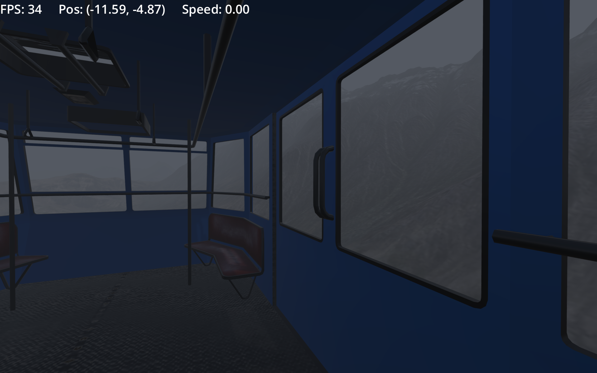

Blog posts
Todo List
 Aarsh Joshi
Aarsh Joshi
 Jan 13, 2026
Jan 13, 2026

Learn JavaScript properly because I plan on adding a blog page where anyone can add blogs.
also to make a script which automatically reads my github profile and updates the blog automatically using AI (ai count = 1).
This todo project will help me organize my development tasks and future features. By building a simple yet functional task management system, I'll learn about state management, user interactions, and data persistence. It's all about making development more efficient and organized.
Unvibecoded UI :- takes website and unvibecodes the ui using ai
Building My Personal Website with HTML and CSS
Aarsh Joshi
Jan 12, 2026

Creating my personal website was an exciting journey. I designed a clean and minimal site that showcases my work and thoughts. Using HTML and CSS, I built a responsive design that looks great on all devices.
The project taught me the importance of semantic HTML and proper CSS organization. From navigation bars to blog sections, every component was carefully structured to be maintainable and scalable for future updates.
This website serves as my digital presence and portfolio. It's a living project that evolves as I grow as a developer, and it reminds me of how satisfying it is to create something from scratch and continuously improve it.
DSA + C++: Random Experiments and Learning
Aarsh Joshi
Oct 14, 2025

My random C++ project was exactly that—a collection of experiments and explorations in one of the most powerful programming languages. C++ introduced me to low-level programming concepts, memory management, and the intricacies of compiled languages. More importantly, C++ has become my primary language for solving Data Structures and Algorithms problems, which I practice almost every day on LeetCode.
Working with C++ taught me about pointers, references, and manual memory management—concepts that seem daunting at first but become powerful tools once understood. The language's performance capabilities and control over system resources make it irreplaceable for certain applications. Daily DSA practice has sharpened my problem-solving skills and deepened my understanding of efficient algorithms.
Though labeled as "nothing" in my repository, this project was anything but. It was a sandbox for learning fundamental computer science concepts and understanding how software really works at a deeper level. Combined with my consistent practice on LeetCode and CodeChef, C++ has become an essential tool in my developer toolkit. Sometimes the best learning happens through unstructured exploration paired with daily discipline.
Enforcing Security with Password Policy Programs (College Assignment)
Aarsh Joshi
Dec 29, 2025
Security is paramount in modern applications. I built a password policy enforcer using Shell scripting to validate and enforce strong password requirements. This menu-driven program helps systems administrators maintain security standards across their infrastructure.
The project implements comprehensive checks for password complexity, length requirements, and character diversity. By automating these validations, organizations can significantly reduce security vulnerabilities and ensure compliance with industry standards.
Working on this project reinforced the importance of defensive programming and security-first thinking. Every line of code matters when it comes to protecting user data, and automation tools like this are essential in modern DevOps practices.
Building Python Applications: badApp2 Project
Aarsh Joshi
Dec 08, 2025

Python has been my go-to language for rapid development and prototyping. The badApp2 project allowed me to explore Python's extensive libraries and its elegant syntax. Despite its humble name, this project taught me valuable lessons about software design and iteration.
Working with Python reinforced the importance of writing clear, readable code and leveraging the language's powerful standard library. From data structures to file handling, Python makes complex tasks feel simple and intuitive.
Every project is a learning opportunity, and badApp2 was no exception. It helped me understand the iterative nature of software development and the importance of building something functional before perfecting it. Sometimes you just need to start coding and improve along the way.
Learning GitHub: My Introduction to Version Control
Aarsh Joshi
Dec 02, 2025

Starting my journey with GitHub was a crucial step in becoming a better developer. Through the skills-introduction-to-github course, I learned the fundamentals of version control, branching, and collaborative development that every modern developer needs to know.
Understanding Git and GitHub opened up a world of possibilities for managing code, contributing to open source, and collaborating with other developers. I learned about commits, pull requests, branches, and how to maintain a clean project history.
This foundational knowledge has been invaluable in all my subsequent projects. Version control isn't just about backing up code—it's about understanding the evolution of a project and being able to work confidently with others on shared codebases.
Learning Godot and Making a 3D Game
Aarsh Joshi
Oct 14, 2025

Above image is a small glimpse of an early version of the game.
I'm currently working on learning Godot Engine and developing my first 3D game. It's an exciting journey into game development, exploring how to create immersive 3D environments, implement game mechanics, and bring interactive experiences to life.
Godot has been an incredible tool for learning game development. Its intuitive scene system and GDScript language make it accessible for beginners while still being powerful enough for complex projects. I'm experimenting with 3D modeling, physics, lighting, and player controls.
This project is still in its early stages, but I'm excited about the progress so far. Game development combines creativity with technical problem-solving in ways I hadn't experienced before. Stay tuned for updates as the game takes shape!